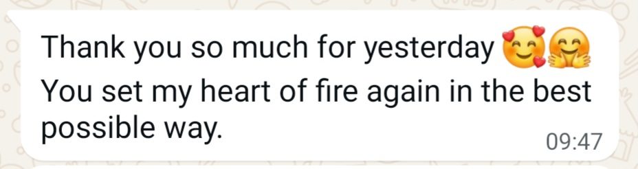

If you are a high achiever who knows how to build, move, and succeed, yet sense that in the rush of achievement, something essential risks being overlooked: intimacy, integrity, and the people who matter most.
Courage. Kindness.
Presence.
A calm, focused space where intuition and strength meet
and your inner truth can safely land.
Who Is This For?
If you are used to being the strong one, and long to experience what it feels like to be guided with the same strength and care you offer others.
If you are highly sensitive, feeling deeply, caring deeply, yet have grown used to shrinking your own truth to keep the peace and avoid conflict, at a quiet cost to yourself.
If you often second-guess yourself, feeling how fear or self-doubt quietly hold you back from acting on what you truly want.
Or you are simply standing at a crossroads, facing a real decision, and you wish not just to choose correctly this time, but to reconnect with an inner compass you can trust for life.
If any of this strikes a chord,
this is where we begin.
The Space We Work In
A Calm Mirror
Have you ever wondered:
"If there were a part of me that already knew…
what would it say right now?"
Clarity requires a compassionate mirror.
A space where looking inward does not feel like danger, but like coming back to yourself.
This is where the nervous system softens. Where what was suppressed can be spoken. Where inner conflict begins to resolve.
ILLUMINATE is where your heart and mind go back to being whole.
About
Who am I?
My name is Yair (יָאִיר), Hebrew for “will illuminate.”
For more than 25 years, I have been drawn to questions of truth, alignment, and inner coherence. What I share here is not only something I studied; it is something I have lived, tested, and refined through experience.
Over the past 16 years, I have worked with individuals navigating transition and the deeper questions that arise when life begins to ask for alignment.
My path has taken me through very different worlds: performance and discipline, spiritual exploration, technology and efficiency. In each space, I found something valuable. And in each, something essential was missing.
What I was looking for did not fully exist outside.
So I committed to cultivating it from the inside.
My work is grounded in a simple belief:
intuition without courage remains unrealized,
and courage without compassion becomes force.
Over time, these values converged into what I call competent kindness.
Kindness that does not collapse boundaries.
Kindness that is not afraid of clarity.
Kindness that can look truth in the eye and name it.
And strength that remains guided by the heart.
This is the space I have been crafting, and how ILLUMINATE was born.
Based in Lugano, Switzerland, whose alpine landscapes bring me quiet happiness and reflect the clarity and calm I value in this work.
In their own words
What this is not
Not motivational hype.
Not spiritual bypassing.
Not endless therapy.
This is about setting you free to be your authentic self.
When you make choices that respect who you really are,
what you get is self-love.
In practice.
How We Work
A clear structure
A clear structure
for real work.
We use conversation, energy work, and somatic awareness to illuminate the inner landscape where clarity lives.
But clarity is not only inner.
This is why we integrate modern tools to help translate it into real-world action: concrete decisions, aligned priorities, and practical next steps in your day-to-day life.
We begin with a free introductory conversation.
If aligned, we begin a Clarity Cycle.
Free
Introductory Clarity Conversation
We meet to assess alignment. No commitment required. A space to explore whether this is the right fit for you.
CHF 150
Extended First Session
An extended session to map where you are, what is blocking you, and what you truly want. This becomes the foundation everything else is built on.
CHF 120 × 7
The Clarity Cycle
Seven focused sessions to unpack what's stuck and practice the new you. On the last session, we reassess whether to pause here for now or choose a goal for a new cycle.
Investment
Clear pricing.
Clear pricing.
No surprises.
The cycle may be paid in full or in up to 3 installments.
Extended First Session
CHF 150
One extended session to map your story, values, patterns, and current conflict.
- 90-minute deep-dive session
- Mapping of story, values & patterns
- Foundation for the full cycle
Full Clarity Cycle
CHF 990 / cycle
Extended first session + 7 focused sessions. Payable in full or 3 installments of CHF 330.
- Extended first session (CHF 150)
- 7 focused sessions (CHF 120 each)
- Structured map & ongoing guidance
- Installment option available
This is not just about you.
The years we spend avoiding ourselves
don't just cost us.
They cost the people we love most.The version of you that never got to show up fully.
The conversations that never happened.
The closeness that stayed just out of reach.
When you choose to illuminate —
the world around you gets brighter too.

You don't have to keep
carrying this alone.
Clarity is possible.
Harmony is possible.
It begins with one step.